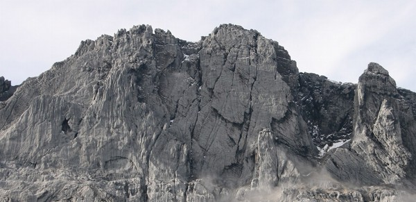
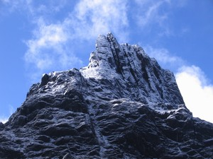

Navigation
Carstensz Pyramid
- PROGRAMS & SCHEDULE
- Our most imporant expeditions
- LAST CARSTENSZ REFERENCIES
- History of climbing the summit
- Legendary Carstensz climbers
- Seven Summits
- 7 Summits - History
- 7 faces of Carstensz Pyramid
- Photos from climbing
- The nature and flora
- Trekking around Carstensz
- Climbing routes to the summit
- 7summits Carstensz best Base camp
- The Tribes and People
- Climate and weather
- Climbing permits
- How to go
- The Highest Mountain of Papua New Guinea
- Why to go with us
- Malaria
- Wrote about us
- References
- Links
- Contact us
- Download


Carstensz Pyramid
Touroperator for Papua – this is our 20th season! Working for you since 1997. Specialized in Carstensz Pyramid expeditions since 2005. You can hardly find one who knows Papua as well as we do!
Carstensz Pyramid is the highest mountain in Australia and Oceania. It is the eight summit in the Seven summits project (7 summits on 7 tallest mounatins on 7 Continets). Carstensz Pyramid is situated in west Papua (now named Papua province Indonesia). This Indonesian Province was called Irian Jaya till 2005. It lies in New Guinea, which is the world"s second largest island.

Carstensz Pyramid Photo©JahodaPetr.com (Carstensz Pyramid & Papua Guide)
Height:
4884 m
(16023 ft)
Coordinates:
S 04°04.733
E 137°09.572
Locality:
New Guinea
west Papua
"Anyone who has once seen Carstensz Pyramid longs for it like it was a beautiful woman. It seduces you while remaining mysterious. Once in a while it shows you all of its beauty, only to be covered in the veil of mist a minute later. It is provocative but unattainable. It makes you tormented and restless, as it does us""
Petr Jahoda – climber, Papua & Carstensz guide
Carstensz Pyramid or Puncak Jaya or Jaya Kesuma"
Carstensz Pyramid, called Puncak Jaya by some, and Puncak Jaya Kesuma or only Jaya Kesuma by others, is located to the west of the central highland called Jayawijaya and Sudirman Mountains. It is the tallest mountain in Australia and Oceania. Technically this means that Carstensz Pyramid is the tallest mountain between America and the Himalayas.
.jpg)
Officially it carries the name of its discoverer – of John Carstensz, who was a Dutch sea-farer. In 1623 he brought news to Europe about the snowbound mountain right on the equator, but no one believed him. He was the first European to see Carstensz Pyramid with his own eyes.
Indonesian communists called it Puncak Jaya (the summit of victory), even though this name belonged to a different summit which was considered to be the highest (Nga Pulu). Yet another name for Carstensz Pyramid which is also often used, is Jaya Kesuma. This name is used in books published by Mapala University. However, these days Indonesia uses (rather inconsistently) both names of the mountain – Carstensz Pyramid and Puncak Jaya.
Sometimes you can run into misspelled „names“ used when referring to the Carstensz Pyramid, these include Karstens , Carstens, Carstenz, Carstenzs, Carstesz, Carstes, Carstez, Karstensz, Karstenz, Karstesz, Karstes, Karstez or Piramid. However, these all are typos. The only correct name is Carstensz Pyramid. Sometimes, the second name for Carstensz Puncak Jaya is mispelled and following incorrect forms are used instead: Puncak Jaja or Puncak Jaia. The most frequent typos are undoubtedly Karstens and Carstens. The former typo stems from the name of the Carstensz Pyramid discoverer, who is sometimes spelled as Jan Karstens.
The Question of Carstensz Pyramid"s height
The officially recognized height of the Carstensz Pyramid is 4884 m (16023 feet some sources claim 16013 feet). Despite that many sources still claim its height is 5030 meters (16503 ft). Australian navigational air maps quote 16503 feet (5030 meters). Still, in 1994, the height of the world recognized publisher of maps and guides from Verlag noted on the map „Indonesien Ost“ the height 5030 m.
All our equipment (both altimeters and GPS"s) showed its height lower than 5000 meters (16400 feet) at the top of the Carstensz Pyramid. Therefore, in line with other reputable mountaineers, we denote the official height of Carstensz Pyramid 4884 meters (16023 feet). However, we are still in doubt about the reasons behind air navigational maps and Verlag being wrong.
Snow mountains on the equator"

Carstensz Pyramid – Middle Peak Photo©JahodaPetr.com
Carstensz Pyramid – Puncak Jaya (4884 m, 16023 ft), Puncak Mandala (4640m, 15223 ft), and Puncak Trikora (4730m, 15518 ft), are the three tallest and most well known mountains of west Papua. Carstensz Pyramid is the tallest of them, and it belongs to the Snow Mountains (Pegunungan Maoke in the local language). They are situated in the west of the central highland Jayawijaya.
The legendary tropical Snow Mountains are situated in the middle of endless jungles in West Papua. They are the logical ending of Cembalo Plato. Out of the three mentioned mountains, only Carstensz pyramid belongs among them. Although the massif of the Snow Mountains is not too high, and it lies 4 degrees south of the equator, it contains four relatively large glaciers. The largest of them is not the Carstensz Glacier, but Meren Glacier which fringes the Nga Pulu peak (4862 m, 15951 ft). Some Indonesians call this peak Puncak Jaya, because it was long considered to be the highest peak of Papua.
And where does the name Snow Mountains come from" There are not only glaciers on the summits, but the reason is also the fact that snowing is not unusual there. Tropical snow storm often bring snow to areas situated as high as 4000 m (13123 ft).
Graceful wall of Carstensz Pyramid
.jpg)
Carstensz Pyramid – wall Photo©JahodaPetr.com
The wall of the Carstensz Pyramid is about 500 – 600 meters (1640 – 1968 ft) high. In the upper part it is traversed by a gigantic ledge, in which to big culoars went. The bottom part of the wall – approx. 300 m (984 ft) is „neatly“ bowed at an angle of 10 – 15°. The upper part of the wall is approx. 80 m (262 ft), and it is almost vertical. The peak crista of Carstensz Pyramid is largely rugged and exposed. Some climbers say that the wall of Carstensz Pyramid is as sharp as glass, and they are not far from the truth.
You can ger much more information about climbing the Carstensz Pyramid by exploring the pages linked from the menu on the left hand side.
We specialize on trips to the Carstensz Pyramid (Jaya Kesuma) so you can learn more on a dedicated page about carstensz pyramid expeditions with us.